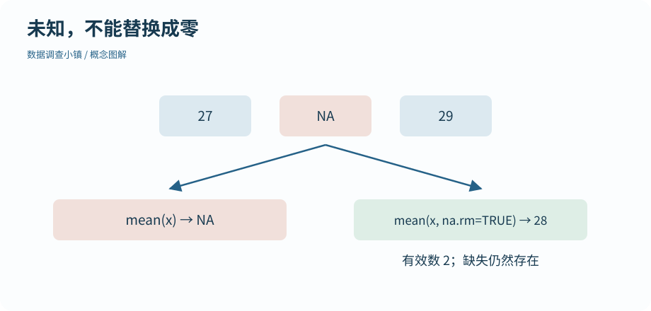

第 07 节 · 对象仓库
缺了一格，意味着什么
空白温度可以直接当成零吗？
识别 NA，解释缺失传播、类型转换和向量回收。
本节目录
运行位置：打开练习包内的 r-lab.Rproj，在项目根目录运行本节脚本。安装与准备见第 02—04 节；第 13 节说明扩展包。
没有记录，不等于记录为零
假设三次测温是 27、缺失、29。NA表示缺失信息。它与零不同：零是一个具体测量值；NA 表示我们不知道。R 会把 mean(c(27, NA, 29)) 的结果保留为 NA，提醒你有信息没有处理。
图解 · 未知，不能替换成零

默认均值保留缺失提示；明确忽略缺失时得到 28，但只用了两项记录。数据没有被补齐。
放大查看 ↗ 保存 SVG ↓# 数据调查小镇 · 第 07 节
# 在 r-lab 项目根目录运行；输出只写入 results。
temperature <- c(27, NA, 29)
print(is.na(temperature))
print(mean(temperature))
print(mean(temperature, na.rm = TRUE))
print(sum(!is.na(temperature)))
print(c(1, "2"))
print(as.numeric(c("27", "29")))
print(c(1, 2, 3, 4) + c(10, 20))
# 长度整除时也会回收；没有警告不等于符合你的意图。[1] FALSE TRUE FALSE [1] NA [1] 28 [1] 2 [1] "1" "2" [1] 27 29 [1] 11 22 13 24
加入 na.rm = TRUE 后，均值是用两条已知记录计算的。这个参数没有修复那一格，也没有证明缺失不影响分析。报告应同时给出有效数，例如 sum(!is.na(temperature))，再思考为何缺失：设备坏了还是某个时段漏记了？
为什么不能用 == NA 查缺失
与未知值比较通常仍是未知，所以 x == NA 不能产生你想要的“哪些位置缺失”筛网。用 is.na(x)；用 !is.na(x) 找已知位置。x[!is.na(x) & x > 28] 把“有记录”和“温度条件”都写清楚。
类型转换要看结果
把数值与文字用 c() 合并，可能统一转为字符。as.numeric(c("27", "29")) 可以转成数字，但 as.numeric("hot") 不能猜出温度，会产生 NA 并给出警告。警告是线索，应检查原始文本和新产生的缺失，不能只把警告隐藏。
类型转换不是改标签：它可能改变后续运算是否有效。类别编码也有自己的规则，第 09 节会说明为什么不能随手对因子使用 as.numeric()。
两排长度不同，会发生什么
R 的许多向量运算会重复使用较短的向量，这叫回收规则。本例的第二排 10、20 被重复为 10、20、10、20，因此计算没有警告。如果长度不能整除，通常会出现警告。即使没有警告，也应检查这种对应关系是否符合你的意图。
本节的原则是先辨认信息，再决定处理方式。缺失不能默默填零，文字不能未经检查当数字，长度不同不能只凭“代码没报错”就接受结果。
动手试试
数清参与计算的记录
x <- c(30, NA, 33, NA)，计算已知温度的均值与有效数。
给我一点提示
mean() 的 na.rm 参数与 sum(!is.na()) 各回答一个问题。
查看参考解法与解释
mean(x, na.rm = TRUE) 为 31.5；sum(!is.na(x)) 为 2。原向量仍有 4 个位置，缺失值没有被补成其他温度。
带走这一点
NA 表示未知，处理它时必须说明哪些观察参与了计算；转换类型和长度不匹配也会改变结果。现在已有温度、地点和日期，下一节把这些对应关系放进一张数据框。
检查一下理解
mean(x, na.rm = TRUE) 会补回缺失值吗？
查看解释
计算规则与数据修补是不同操作；忽略后要记录有效样本数。